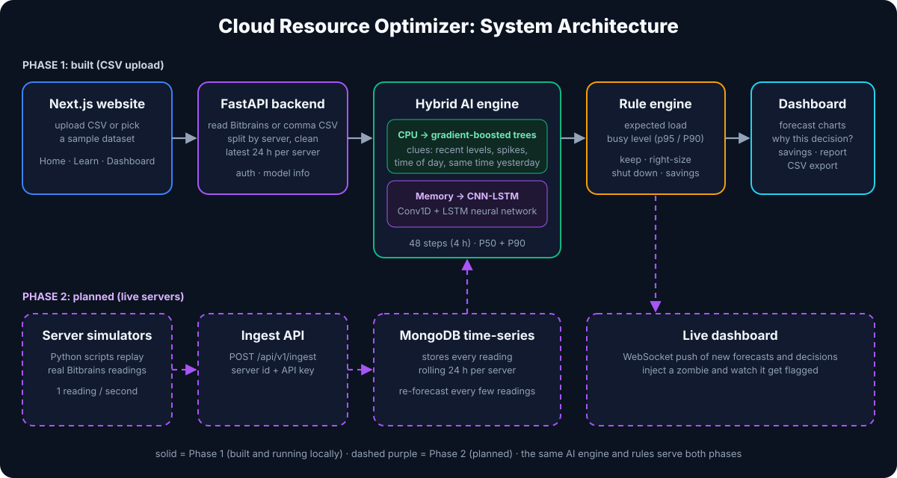

Cloud Resource Optimizer
AI-driven forecasting of server usage and resource consolidation for cloud infrastructure.
1. Project Overview
The Cloud Resource Optimizer is an intelligent system designed to reduce cloud computing costs by predicting future CPU and memory usage of servers. By analyzing historical telemetry data, the system forecasts each server's next 4 hours, identifies under-utilized resources, and recommends whether to keep, right-size or shut down each instance, with an estimated monthly saving.
Phase 1 (Complete): Upload a CSV of historical telemetry (Bitbrains dataset format or a normal comma-separated file). A hybrid AI model forecasts the next 4 hours for every server and a rule engine turns the forecast into recommendations on an interactive dashboard.
Phase 2 (Final): A live server log injecting simulator: Python scripts act as servers and stream readings to an ingest API, stored in a MongoDB time-series collection, with predictions re-computed and pushed to a live dashboard in real time.
2. Video & Live Site
A narrated walkthrough of the whole project (7 minutes). The interactive site has the same video split into 9 chapters, interactive visualizations, a glossary and a quiz.
Explore the interactive Learn section →
3. Literature Review
The field of cloud resource optimization has evolved significantly, transitioning from reactive threshold-based methods to proactive, AI-driven forecasting. This project builds upon several key areas of research:
1. Traditional Reactive Auto-Scaling
Historically, cloud providers relied on simple rule-based scaling (e.g., "scale up if CPU > 80%"). Research by Lorido-Botran et al. (2014) highlighted that reactive systems suffer from cold-start delays, leading to degraded performance during sudden traffic spikes, or excessive costs when scaling down too slowly.
2. Statistical Time-Series Analysis
To move towards proactive scaling, statistical models like ARIMA (AutoRegressive Integrated Moving Average) were introduced. While effective for linear trends, studies such as Calheiros et al. (2015) demonstrated that these models struggle to capture the non-linear, highly volatile, and cyclical nature of modern web workloads.
3. Deep Learning & LSTMs in Cloud Computing
Recent literature heavily favors Recurrent Neural Networks (RNNs) and specifically Long Short-Term Memory (LSTM) networks for workload prediction. LSTMs solve the "vanishing gradient" problem of standard RNNs, allowing them to remember long-term dependencies. A landmark study by Kumar et al. (2018) proved that LSTMs significantly outperform ARIMA in predicting CPU utilization on the Bitbrains dataset. Our project uses a CNN-LSTM (a 1-D convolution followed by an LSTM) to forecast server memory over a 4-hour horizon.
4. Gradient Boosting & Quantile Forecasting
Friedman (2001) introduced gradient boosting: many small decision trees trained one after another, each correcting the errors of the previous ones. With hand-crafted time-series features it is a strong forecaster for noisy data. Koenker & Bassett (1978) introduced quantile regression, which predicts a chosen percentile instead of only the average. Our project combines both: gradient-boosted trees forecast CPU, and every forecast has a P50 (most likely) and a P90 (safety limit) value, so right-sizing decisions can account for uncertainty.
4. Technologies Used
Backend
- FastAPI (Python): High-performance async framework for the API layer, chosen for its speed and native support for data validation.
- TensorFlow & Keras: Used to build and train the CNN-LSTM neural network (memory forecast).
- Scikit-Learn:
HistGradientBoostingRegressorfor the CPU forecast (P50 and P90 quantile models). - Pandas & NumPy: Data cleaning, windowing and per-server normalisation.
Frontend
- Next.js (React): Component-based React framework for the Home, Learn, Dashboard and Admin pages.
- Tailwind CSS: Utility-first CSS framework for rapid and modern UI styling.
- Recharts: Composable charting library for the history, P50/P90 forecast bands and interactive learning visuals.
Database
- MongoDB: A NoSQL document database for user accounts (with a local JSON fallback) and, in Phase 2, a time-series collection for live server readings.
5. System Architecture, Algorithms & Workflow
Project Workflow (Phase 1)
The application follows a clear data flow from the client interface down to the AI models and back:
upload.py reads Bitbrains or comma-separated files, splits the rows by server, keeps the most recent readings, keeps CPU within 0–100% and requires at least 2 hours of history.
ml_engine.py forecasts all 48 future steps (4 hours) in one pass: gradient-boosted trees for CPU and the CNN-LSTM for memory, each with P50 and P90 values.
rule_engine.py combines history and forecast into an expected load and a busy level, classifies the server (Active, Right-size, Shut down) and estimates the monthly saving.
System Architecture Diagram
The diagram shows the Phase 1 pipeline that is built and running, and the Phase 2 live-streaming path (simulators, ingest API, MongoDB time-series, live dashboard) that reuses the same AI engine and rule engine:

Hybrid AI Forecaster
Two models work as a team, each on the signal where it is most accurate:
- CPU → Gradient-boosted trees: hundreds of small decision trees built one after another. They receive clear clues: recent values and averages, volatility and min/max, time of day, and the reading at the same time yesterday.
- Memory → CNN-LSTM: a 1-D convolution finds short patterns in the last 24 hours, an LSTM reads them in order, and dense layers output the forecast.
- Direct multi-step output: all 48 future steps are predicted at once instead of one step at a time.
- Predicting the change: both models predict the change from the current level, so a quiet server stays quiet in the forecast.
- P50 and P90: the most likely value and a safety limit that real usage should stay below about 9 times out of 10 (quantile / pinball loss).
Optimization Rule Engine
The forecasts are passed to rule_engine.py, which judges each server on its most recent 24 hours and its forecast:
// Pseudocode of the Rule Engine Logic
expected_load = max(avg_cpu_last_24h, forecast_avg_next_4h)
busy_level = max(p95_cpu_last_24h, forecast_p90_peak)
if (expected_load >= 25% OR busy_level >= 50%) {
status = "ACTIVE"; // keep as it is
} else if (expected_load >= 8% OR busy_level >= 20%) {
status = "RIGHT-SIZE"; // move to a smaller machine
savings = "$110.00 / month";
} else {
status = "CONSOLIDATE & SHUT DOWN"; // zombie server
savings = "$146.00 / month";
}Using the 95th percentile instead of the single highest reading means one short spike does not make an idle server look busy. The savings use fixed example prices.
6. Deep Dive: Code Walkthrough
This section explains the core backend files: how data is prepared, how the two models are built, and how the business logic interprets the predictions.
A. Data Preparation (forecast_model.py)
def make_features(cpu, mem, ts):
cpu = np.clip(np.array(cpu, dtype=np.float64), 0, 100)
mem = np.maximum(np.array(mem, dtype=np.float64), 0)
if len(cpu) >= 3: # de-spike the newest reading
cpu[-1] = np.median(cpu[-3:])
mem[-1] = np.median(mem[-3:])
mem_ref = max(float(mem[-24:].mean()), 1.0)
tod = (to_seconds(ts) % 86400) / 86400 * 2 * np.pi
feats = np.stack([cpu / 100.0, np.clip(mem / mem_ref, 0, MEM_RATIO_CLIP),
np.sin(tod), np.cos(tod)], 1)
return feats.astype(np.float32), mem_ref- Per-server normalisation: CPU is scaled to 0–1 and memory is divided by the server's own recent average, so a 2 GB server and a 64 GB server look alike to the model.
- Time of day: encoded as sine and cosine so 23:55 and 00:05 are close together.
- Windows: during training (
train_lstm.py,train_gbm.py) every window comes from a single server: 24 hours of input and the next 4 hours as the target. Servers are split 520 train / 80 validation / 163 test (never seen).
B. The CNN-LSTM (memory)
inp = keras.Input((LOOKBACK, N_FEATURES)) # 288 steps x 4 features
x = layers.Conv1D(32, 6, strides=3, activation="gelu")(inp) # short patterns
x = layers.LSTM(64)(x) # reads them in order
z = layers.Concatenate()([x, last, recent])
z = layers.Dense(128, activation="gelu")(z)
delta = layers.Dense(HORIZON * 2 * len(QUANTILES))(z) # 48 steps x (cpu, mem) x (P50, P90)
out = layers.Add()([base, delta]) # last value + predicted change- Loss: pinball (quantile) loss trains the P50 and P90 outputs at the same time.
- Residual output: the network predicts the change from the last value, which keeps forecasts stable.
C. The Gradient-Boosted Trees (CPU)
TREE_PARAMS = dict(max_iter=400, learning_rate=0.06, max_leaf_nodes=63,
min_samples_leaf=80, l2_regularization=1.0, random_state=0)
t50 = HistGradientBoostingRegressor(loss="absolute_error", **TREE_PARAMS).fit(X, y)
t90 = HistGradientBoostingRegressor(loss="quantile", quantile=0.9, **TREE_PARAMS).fit(X, y)- Features (
cpu_tree_rows): current level, recent lags, 30 min to 24 h averages, volatility, min/max, time of day, the forecast step, and the reading at the same time yesterday. - Target: the CPU change from the current level at the chosen future step. About 1 million training rows from 520 servers.
D. Real-Time Inference (ml_engine.py)
feats, mem_ref = make_features(cpu, mem, ts)
pred = self.model.predict(feats[None], verbose=0)[0] # CNN-LSTM
rows, level = cpu_tree_rows(cpu, ts) # trees
cpu_p50 = np.clip(level + self.trees["p50"].predict(rows), 0, 100)
cpu_p90 = np.clip(level + self.trees["p90"].predict(rows), 0, 100)
mem_p50 = np.maximum(pred[:, 1, 0], 0) * mem_ref
mem_p90 = np.maximum(pred[:, 1, 1], 0) * mem_ref- One call per server produces the whole 4-hour forecast; no step-by-step loop is needed.
E. The Business Logic (rule_engine.py)
expected_load = max(avg_cpu, avg_future_cpu)
busy_level = max(p95_cpu, future_p90_peak)
if expected_load >= 25.0 or busy_level >= 50.0:
status = "ACTIVE"
elif expected_load >= 8.0 or busy_level >= 20.0:
status = "RIGHT-SIZE"
monthly_savings = 110.00
else:
status = "CONSOLIDATE & SHUT DOWN"
monthly_savings = 146.007. Results & Accuracy
Accuracy is measured on 163 servers the models never saw during training or validation, using 644 four-hour forecast windows (ml_models/model_metrics.json).
Model selection
Both models were evaluated on the same unseen servers; the hybrid uses each where it performed best.
| Measure (test servers) | CNN-LSTM only | Hybrid (trees CPU + CNN-LSTM memory) |
|---|---|---|
| Average CPU error | 1.43 pts | 1.35 pts |
| CPU within ±2 points | 93.2% | 93.4% |
| Correct label | 96.9% | 97.4% |
| P90 coverage | 88.1% | 88.5% |
| Memory error (WAPE) | 37.0% | 37.0% |
8. Demo Datasets
Seven ready-made CSV files in demo_data/ (also one-click buttons on the dashboard). Every server is a real Bitbrains virtual machine from the test split, so the model has never seen it. Results below are actual outputs of the system.
| File | What it shows | Est. saving |
|---|---|---|
| 01_startup_3_servers | One active, one right-size, one shut-down server | $256 / month |
| 02_enterprise_10_servers | A realistic mix of 10 servers, incl. a day/night rhythm | $878 / month |
| 03_zombie_cleanup_8_servers | Mostly idle servers: large savings | $876 / month |
| 04_healthy_cluster_5_servers | All busy: no cuts recommended | $0 |
| 05_servers_that_went_idle | Busy earlier, idle now: judged on recent behaviour | $292 / month |
| 06_daily_pattern_servers | Daily rhythm, shown in the forecast view | $220 / month |
| 07_bitbrains_raw_format | Original Bitbrains file format is accepted | $0 |
9. How to Run the Project
Everything runs locally and no internet or external API keys are required.
Prerequisites
- Python 3.10+ (the project venv uses 3.13)
- Node.js (v18+) and npm
- MongoDB is optional: without it, accounts are stored in
backend/data/users.json
Backend Setup
# 1. Navigate to the backend directory
cd cloud-resource-optimizer/backend
# 2. Create and activate a virtual environment
python -m venv venv
venv\Scripts\activate # macOS/Linux: source venv/bin/activate
# 3. Install dependencies
pip install -r requirements.txt
# 4. Start the FastAPI server
uvicorn app.main:app --port 8000Frontend Setup
# 1. Navigate to the frontend directory
cd cloud-resource-optimizer/frontend
# 2. Install dependencies
npm install
# 3. Build and start the website
npm run build
npm run start # or: npm run devOpen http://localhost:3000. Demo accounts: admin / admin123 (approves clients) and demo_client / client123 (uses the dashboard).
Retraining the models
python ml_models/train_lstm.py # CNN-LSTM (memory)
python ml_models/train_gbm.py # CPU trees + hybrid accuracy report
python scripts/create_demo_csvs.py # rebuild the demo datasets10. Learning Lessons & Takeaways
Developing the Cloud Resource Optimizer offered profound insights into merging machine learning with full-stack engineering:
- Choosing the right model for each signal: Comparing a deep learning model and gradient-boosted trees on servers never seen in training showed that each has strengths. A hybrid (trees for CPU, CNN-LSTM for memory) gave the best overall result.
- Time-Series Data Handling: Building windows per server, normalising each server against its own level and adding time-of-day features were essential for reliable training. Keeping a separate, never-seen test set made the accuracy numbers honest.
- Forecasting with uncertainty: Predicting a P90 safety limit next to the most likely value (P50) makes right-sizing decisions safer than a single number.
- Actionable AI & Business Logic: Raw ML predictions are most valuable when integrated with decisive business logic. By passing the forecasts through a deterministic Rule Engine, abstract metrics become tangible, explainable cloud cost savings.
11. Learning Resources
If you're new to the technologies used in this project, here are some excellent crash courses to get you started: